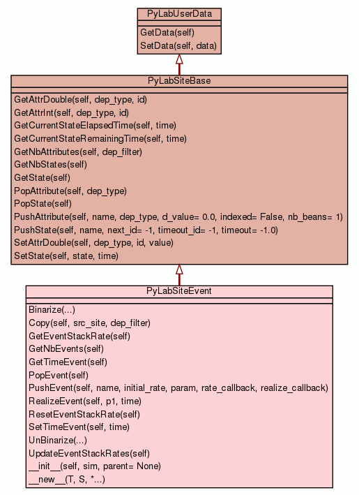

Class PyLabSiteEvent

This class handles ATTRIBUTES and STATES (since it inherits from PyLabSiteBase),
but also EVENTS.
Note : The concept of SITE (data of a node in a network -
SPATIALIZED context) has been kept for MASS ACTION context for preserving
genericity.
All the features related to ATTRIBUTES and STATES are deeply described
in PyLabSiteBase, since PyLabSiteEvent inherits from this
class.
EVENTS (See also : PyLabEventStack) :
An event is an action that can be fired at any time on the SITE
(locally).
-
It has a given propensity to occur (which can change during the
simulation life time)
-
It comes with an action (method) which is fired (executed) when the
event occurs
The PyLabSiteEvent class is nothing else but an aggregate of the
attributes, states and events stacks : See C++ classes
LabAttributesStack, LabStateStack and
LabEventStack.
Note : A Site is always related to a simulator.
USAGE :
A basic use case would look like follows (assuming the setup for
ATTRIBUTES and STATES has already been done - See PyLabSiteBase)
:
First of all define the callback methods to be fired. Those must be
of the form :
>>> def BirthRate(node):
... a_site = node.GetUserData()
... rate = b * a_site.GetAttrDouble(cyelp.IND_DEP, X)
... if (a_site.GetState() == MUTANT):
... rate *= 0.9
... return rate
>>> def RealizeBirth(node):
... print "BIRTH fired !"
...
... return 0.0
Note : the node parameter can be any Python object
(here we assume we are in a SPATIALIZED context, that's why we use the
"node" term).
Then we can create the callbacks and assign them to the Site :
>>>
...
...
>>> rate_callback = PyLabCallBack(BirthRate)
>>> realize_callback = PyLabCallBack(RealizeBirth)
>>> a_site.PushEvent("BIRTH", 0, a_node, rate_callback, realize_callback);
...
...
>>> rate_callback = PyLabCallBack(DeathRate)
>>> realize_callback = PyLabCallBack(RealizeDeath)
>>> a_site.PushEvent("DEATH", 0, a_node, rate_callback, realize_callback);
...
...
Push one callback per possible event according to the needs of your
simulation for the given Site.
|
|
|
|
|
Copy(self,
src_site,
dep_filter)
Copy of the 3 stacks (attributes, states, events) given a source SITE
to this one. |
|
|
float
|
|
int
|
GetNbEvents(self)
Get the number of events in the events stack. |
|
|
float
|
GetTimeEvent(self)
Get the current time of the events stack. |
|
|
|
|
PopEvent(self)
Remove the event located on top of the events stack. |
|
|
|
|
PushEvent(self,
name,
initial_rate,
param,
rate_callback,
realize_callback)
Add a new event to the event stack of this Site. |
|
|
|
|
RealizeEvent(self,
p1,
time)
Choose an event given a probability (Multinomial low), then realize
it. |
|
|
|
|
ResetEventStackRate(self)
Reset the total rate of the events stack. |
|
|
|
|
SetTimeEvent(self,
time)
Update the current time of the events stack. |
|
|
|
|
|
|
|
|
|
|
__init__(self,
sim,
parent= None)
Basic constructor (user must provide a parent node in a SPATIALIZED
context). |
|
|
|
a new object with type S, a subtype of T
|
|
|
Inherited from PyLabSiteBase:
GetAttrDouble,
GetAttrInt,
GetCurrentStateElapsedTime,
GetCurrentStateRemainingTime,
GetNbAttributes,
GetNbStates,
GetState,
PopAttribute,
PopState,
PushAttribute,
PushState,
SetAttrDouble,
SetState
Inherited from PyLabUserData:
GetData,
SetData
Inherited from object:
__delattr__,
__format__,
__getattribute__,
__hash__,
__reduce__,
__reduce_ex__,
__repr__,
__setattr__,
__sizeof__,
__str__,
__subclasshook__
|
|
Inherited from object:
__class__
|
Copy(self,
src_site,
dep_filter)
|
|
Copy of the 3 stacks (attributes, states, events) given a source SITE
to this one.
The dependency level (dep_filter) concerns only the attributes
stack (See C++ LabAttributesStack::Copy()).
- Parameters:
src_site - The site (PyLabSiteBase) to copy from.dep_filter - Filter used to select which attributes will be copied. (Ex1 :
dep_filter = IND_DEP | SITE_DEP, means : copies only
non-environmental attributes. Ex2 : dep_filter = IND_DEP |
SITE_DEP | ENV_DEP : copies all). - Overrides:
PyLabSiteBase.Copy
|
|
Access the total rate of the events stack.
- Returns:
float
- The cumulative stack rate.
|
|
Get the number of events in the events stack.
- Returns:
int
- Number of events currently stored.
|
|
Get the current time of the events stack.
- Returns:
float
- The time expressed as a double value.
|
PushEvent(self,
name,
initial_rate,
param,
rate_callback,
realize_callback)
|
|
Add a new event to the event stack of this Site.
Note : Usually, the param parameter would be a PyLabNode in case we
are in SPATIALIZED context. This can be any kind of Python object
otherwise...
- Parameters:
name (str) - Name given to the event (better choose a unique one).initial_rate (float) - Rate at which the event can be fired at start.param (object) - Parameter which will be passed to both rate and realize callbacks
when fired Should be left NULL (None) when sites are built from
models (See PyLabNetBinding and PyLabArrayBinding classes).rate_callback (function) - Function to be called when updating the event's rate.realize_callback (function) - Function to be called when realizing / firing the event.
|
RealizeEvent(self,
p1,
time)
|
|
Choose an event given a probability (Multinomial low), then realize
it. (See PyLabEventStack.RealizeEvent(p1, time)).
- Parameters:
p1 (float) - The probability [0.0, 1.0] used for selecting the event.time (float) - The given time becomes the current time of the stack.
|
|
Update the current time of the events stack.
- Parameters:
time (float) - The current time (usually the current simulation time).
|
__init__(self,
sim,
parent= None)
(Constructor)
|
|
Basic constructor (user must provide a parent node in a SPATIALIZED
context).
- Parameters:
sim (PyLabSimulatorBase) - The Simulator this Site is related to.parent (PyLabNode) - The node this Site is related to. - Overrides:
object.__init__
|
- Returns: a new object with type S, a subtype of T
- Overrides:
object.__new__
|